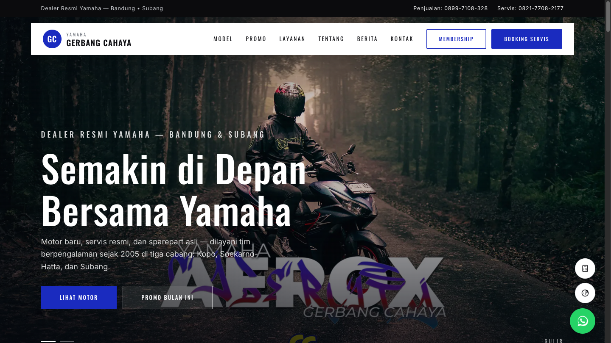
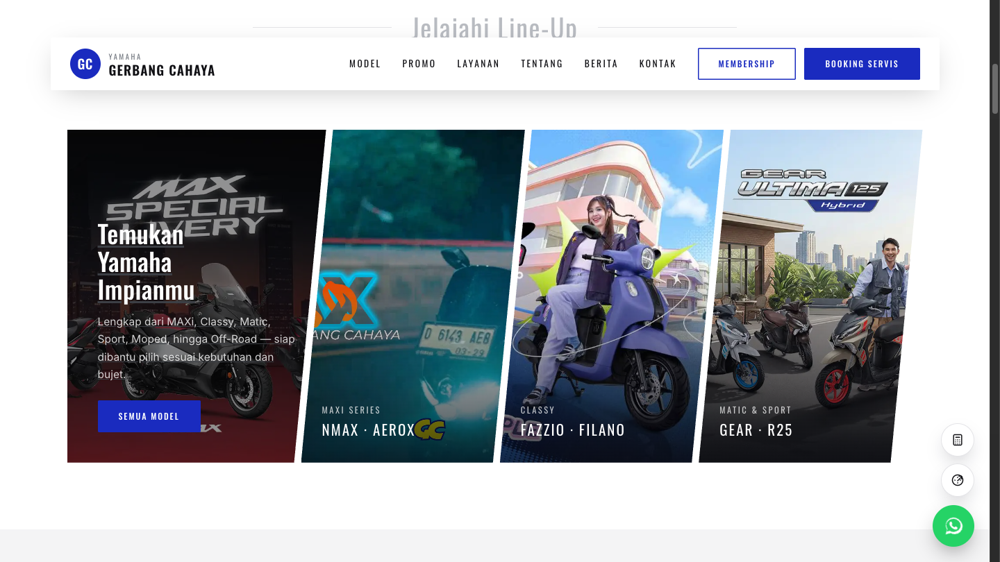
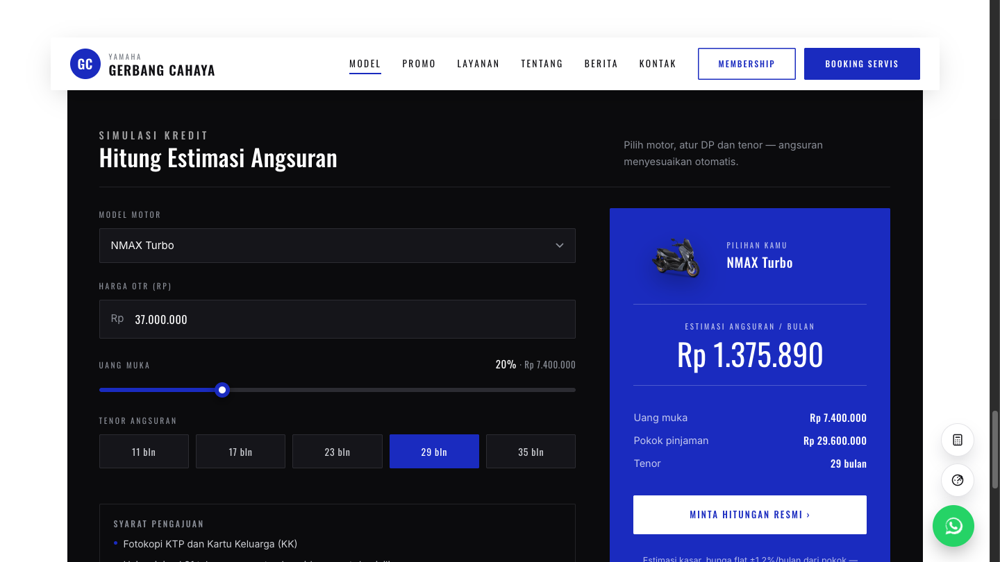
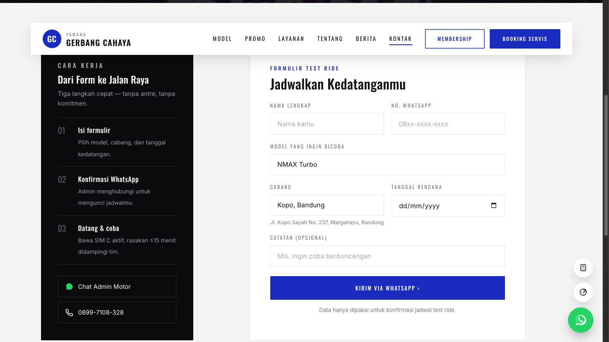
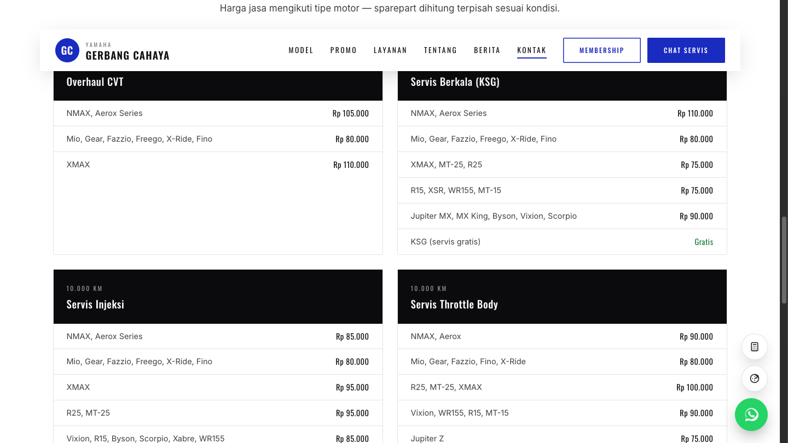
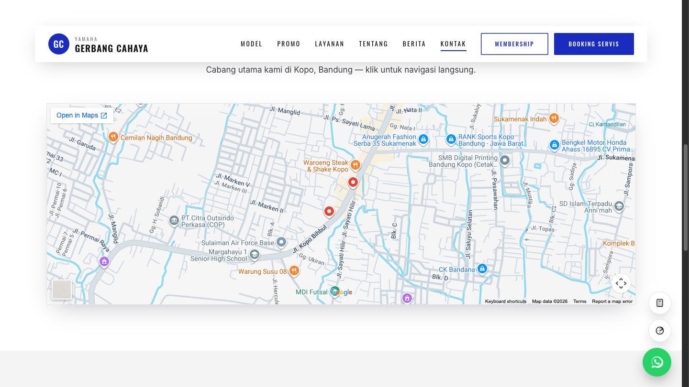
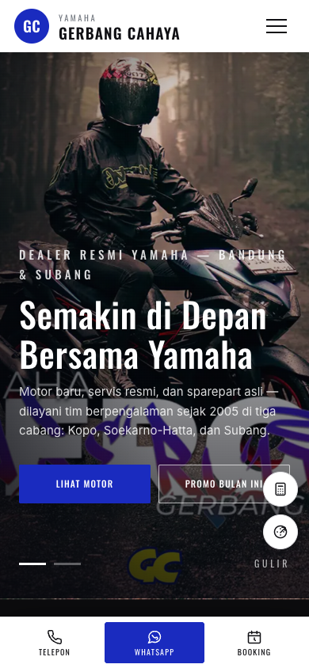

Dari website katalog biasa menjadi mesin penjualan digital: modern, cepat, mudah ditemukan Google & AI, dan mengarahkan pengunjung ke WhatsApp, test ride, dan booking servis.







Langkah berikut yang disarankan: sambungkan domain utama, daftarkan ke Google Search Console & Google Business Profile per cabang, lalu tambah artikel promo tiap bulan.